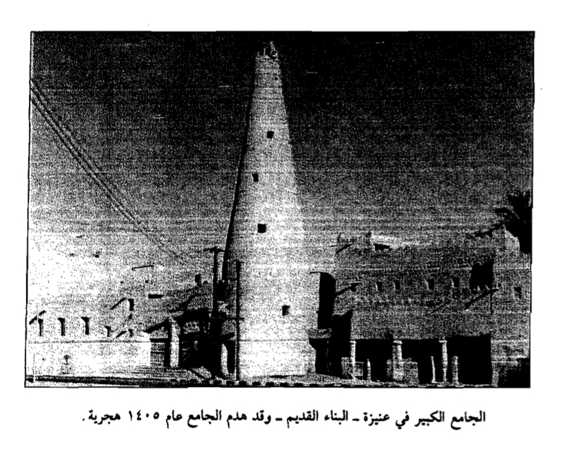

في ذاكرة المكان، تحضر المساجد ليس فقط كبيوت للعبادة، بل كمنارات للعلم ومراكز لتشكيل الوعي الديني عبر الأجيال. ومن بين هذه المساجد، يبرز مسجد الشيخ ابن عثيمين كأحد المعالم التي ارتبطت بسيرة علمية ودعوية مؤثرة. في هذه المقابلة، نقترب أكثر من تاريخ هذا المسجد من خلال حديث مع أحد طلبة الشيخ، الدكتور وليد أحمد صالح الحسين، لنستعرض البدايات، ونرصد ملامح الحضور العلمي، ونستكشف كيف أسهم هذا المكان في صناعة أثر ممتد في المجتمع.
ما هو الاسم التاريخي للجامع ومتى ارتبط اسمه بالشيخ ابن عثيمين؟
كان يسمى جامع عنيزة الكبير، ومن ثم أسموه جامع الشيخ عبد الرحمن السعدي، وبعد وفاة الشيخ (رحمه الله) أسموه جامع الشيخ محمد بن صالح بن عثيمين.
متى تولى الشيخ الإمامة والخطابة في هذا الجامع؟
عندما توفي الشيخ عبد الرحمن السعدي (رحمه الله)، أخذوا يتطلعون إلى من يُرشح بعد وفاته، فكان الشيخ عبد العزيز البسام رُشح لإمامة الجامع، لكنه لم يُطل، فترة جداً وجيزة، وأشار عليهم أن يكون الترشيح من اللجنة التي كُونت في اختيار الخليفة للشيخ عبد الرحمن السعدي، ثم تم الترشيح واختيار الشيخ ابن عثيمين.
عُرف المسجد بعقد حلقات العلم. كيف ساهمت هذه الحلقات في جعل عنيزة وجهة لطلاب العلم من داخل وخارج المملكة؟
كان قدومي عام 1402هـ، ويمكن وصف تلك المرحلة بأنها فترة قلة شهرة الشيخ محمد بن صالح العثيمين، أو محدودية انتشار علمه إن صح التعبير. فلم يكن قد ذاع صيته بعد بالشكل الواسع، ولذلك كان عدد الحضور في دروسه قليلاً جداً، يتراوح ما بين خمسة إلى عشرة طلاب تقريباً. وكانت تلك هي البدايات الأولى التي يغلب عليها قلة العدد ومحدودية الإقبال.
واستمر الحال على هذا النحو لعدة سنوات، ربما ما بين سبع إلى عشر سنوات، حتى بدأت الحلقة العلمية تزدهر تدريجياً. فازداد عدد الطلاب ليصل إلى أكثر من مائة، ثم تجاوز المائتين، بل وربما بلغ في بعض المراحل نحو أربعمائة طالب. ولم يعد الحضور مقتصراً على طلاب من داخل المملكة فحسب، بل أصبح يفد إليه طلاب من مختلف أنحاء العالم، من جنسيات متعددة، بما في ذلك دول الخليج وغيرها، حتى أصبح مقصداً لطلاب العلم من كل مكان.
ويمكن القول إن عام 1403هـ شكل نقطة تحول بارزة وبداية الشهرة الواسعة للشيخ، ليس على مستوى المملكة فقط، بل على مستوى العالم الإسلامي. فقد بدأ في ذلك العام نشاطه العلمي في المسجد الحرام، حيث طُلب منه إلقاء الدروس هناك، وكانت تلك خطوة مهمة في انتشار علمه.
وأذكر أنني كنت برفقته في أول رحلة له إلى مكة في تلك الفترة، حيث سافرنا بالسيارة، وكنا بضعة أشخاص، ونزلنا في ضيافة الدكتور عبد الرحمن بن سليمان العثيمين، وهو ابن عم الشيخ. وفي تلك الزيارة، بدأ الشيخ أولى دروسه في صحن الحرم، وكانت من أوائل البوادر لانطلاق نشاطه العلمي في هذا المكان العظيم.
كما أذكر أن من أوائل ما بدأ به شرحه كان حديث جبريل المشهور، الذي يتناول مراتب الدين: الإسلام والإيمان والإحسان. وكنت أتولى قراءة الحديث عليه، وكذلك قراءة أسئلة الحضور، ثم يقوم الشيخ بالشرح والتعليق، في مشهد علمي مميز شكّل بداية مرحلة جديدة من الانتشار والتأثير.

ما هي أبرز المتون والكتب العلمية التي كان الشيخ يدرّسها في رواق المسجد، وكيف كان يتم تنظيم الدروس؟
من الأشياء الجميلة جداً في دروس الشيخ أنها متنوعة. ففي الفقه، درّسنا عليه «زاد المستقنع» في فقه الإمام أحمد. ودرّس كذلك عدة كتب في العقيدة: «كتاب التوحيد»، و«فتح رب البرية بتلخيص الحموية»، و«منظومة العقيدة السفارينية» لمحمد السفاريني. وفي الحديث، «صحيح البخاري»، و«بلوغ المرام»، و«مصطلح الحديث» لابن حجر، وكتب كثيرة درّسها. وكذلك في النحو، حفظنا عليه «ألفية ابن مالك» كاملة، وقد درّسها وحفظناها عليه. وكذلك «الآجرومية» وكانت فيها نظم وفيها نثر، فدرّس النظم ودرّس النثر.
كيف أثّر وجود المكتبة الملحقة في الجامع في إثراء الحركة البحثية للطلاب في القصيم؟
عندما قدمت إلى الشيخ محمد بن صالح العثيمين عام 1402هـ، كان المسجد لا يزال مبنياً من الطين، وبقي على حاله حتى عام 1405هـ، حيث تم هدم الجامع لإعادة بنائه وتجديده. ثم أعيد تشييده على هيئته الحالية تقريباً، مع بقاء المنارة الطينية القديمة التي لم تُهدم، ولا تزال قائمة إلى يومنا هذا شاهدةً على تلك المرحلة.
كما كانت هناك مكتبة داخل المسجد، تقع في درج طيني يتوسط البناء، حيث كان بين الأرض والسطح غرفة واسعة من الطين تُستخدم كمكتبة. وكانت هذه المكتبة هي مكتبة الشيخ عبد الرحمن بن ناصر السعدي المعروفة آنذاك.
هل كانت المكتبة ثرية بالمعلومات لدرجة تقصدونها؟
في وقتها، هي غرفة منزوية، يعني لا يوجد فيها ذلك البرنامج في الزيارات، أو مفتوحة لأحد، ويدل ذلك على بساطتها. ولكن كانت فيها من المخطوطات الأصلية ما يصل إلى بضعة وسبعين مخطوطة، أنا عملت لها فهرساً.
وفي ختام هذه المقابلة، يتضح أن جامع الشيخ ابن عثيمين لم يكن مجرد مكان تُؤدى فيه الصلوات، بل كان نقطة تحول علمية وروحية أسهمت في تشكيل ملامح الحراك العلمي في عنيزة وخارجها. فمن بدايات متواضعة وحضور محدود، إلى مركز إشعاع يقصده طلاب العلم من مختلف المناطق، تتجلى قصة هذا الجامع كدليل حي على أثر العلم حين يقترن بالإخلاص والاستمرارية. لقد صنع المكان ذاكرة ممتدة، لا تزال آثارها حاضرة في نفوس طلابه ورُوّاده، ليبقى شاهداً على مرحلة مفصلية تحوّل فيها المسجد إلى قلب نابض بالعلم، ومنارة تهدي الأجيال نحو المعرفة.
إعداد: سلمان عبدالرحمن الطيران